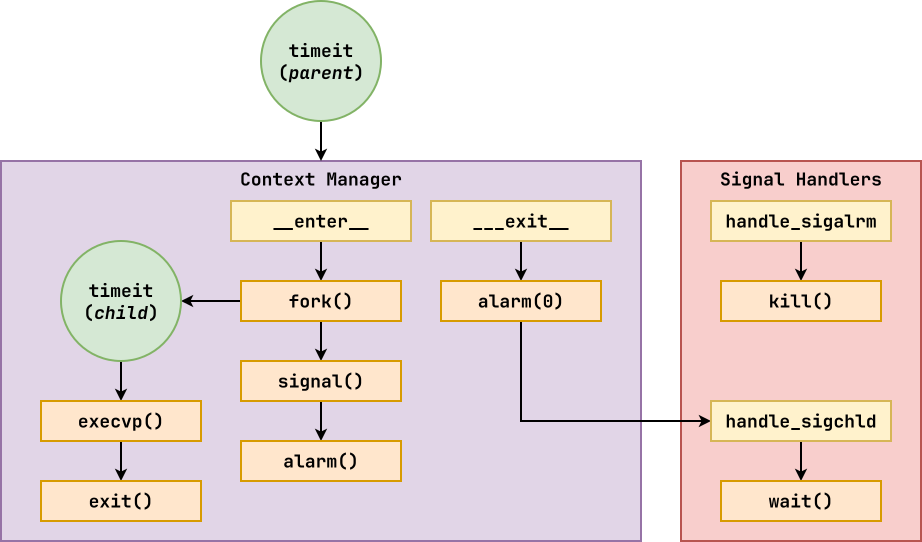

The goal of this homework assignment is to allow you to practice using object-oriented programming and system calls involving processes and signals in Python by implementing one new Unix utility:
The
timeitutility allows users to view the elapsed time of an application while also enforcing a timeout (or cut off time).
Set us up the bomb (No!)¶
Be careful with the fork system call. To prevent a fork bomb, make sure you are not doing it in a loop.
If you still manage to create a fork bomb, do not simply go to another machine and run the same program. Notify the csehelp@nd.edu and explain what happened.
For this assignment, record your scripts and any responses to the following
activities in the homework06 folder of your assignments GitHub
repository and push your work by noon Saturday, October 10.
Activity 0: Preparation¶
Before starting this homework assignment, you should first perform a git
pull to retrieve any changes in your remote GitHub repository:
$ cd path/to/repository # Go to assignments repository
$ git switch master # Make sure we are in master branch
$ git pull --rebase # Get any remote changes not present locally
Next, create a new branch for this assignment:
$ git switch -c homework06 # Create homework06 branch and check it out
Task 1: Skeleton Code¶
To help you get started, the instructor has provided you with the following skeleton code:
# Go to homework06 folder
$ cd homework06
# Download Makefile
$ curl -LO https://pnutz.h4x0r.space/courses/cse.20589.fa26/static/txt/homework06/Makefile
# Download Python skeleton code
$ curl -LO https://pnutz.h4x0r.space/courses/cse.20589.fa26/static/txt/homework06/timeit.py
Once downloaded, you should see the following files in your homework06 directory:
homework06
\_ Makefile # This is the Makefile building all the assignment artifacts
\_ timeit.py # This is the Python script for the timeit script
DocTests¶
You may notice that in addition to the usual comments and TODOs, the
docstrings of each method also contains a few doctests.
You are not to modify these doctests and must keep them in-place. They are used to verify the correctness of your code.
Your code goes below the docstrings, where the TODO and pass
commands are (you may remove the pass once you complete the method).
Task 2: Initial Import¶
Now that the files are downloaded into the homework06 folder, you can
commit them to your git repository:
$ git add Makefile # Mark changes for commit
$ git add *.py
$ git commit -m "Homework 06: Initial Import" # Record changes
Task 3: Unit Tests¶
After downloading these files, you can run the make command to run the
tests.
# Run all tests (will trigger automatic download)
$ make
You will notice that the Makefile downloads these additional test data and scripts:
homework06
\_ timeit.test # This is the Python test for the timeit script
In addition to the embedded doctests in the skeleton code, you will be using these unit tests to verify the correctness and behavior of your code.
Automatic Download¶
The test scripts are automatically downloaded by the Makefile, so any
modifications you do to them will be lost when you run make again. Likewise,
because they are automatically downloaded, you do not need to add or commit
them to your git repository.
The details on what you need to implement for this assignment are described in the following sections.
Activity 2: timeit (0.8 Points)¶
For this activity, write a Python script, timeit.py, that executes the
given command until a timeout is reached or the program terminates as shown
below:
The timeit.py script takes the following possible flags:
-
-d: This allows the user to specify the amount of time to sleep between iterations (default is0.1seconds). -
-t: This allows the user to specify the amount of time to wait before killing the process (default is1second).
After the flags, the user must provide a command and its arguments to run.
Note: If the time limit is exceeded, the parent should kill the child and wait for it. Moreover, the parent should always return the child's exit status as its own exit status.
If the child was killed, then the parent should return the signal it was terminated with.
Task 1: timeit.py¶
To build this script, you will need to complete the timeit.py Python
script by implementing the following methods in the Timer class:

Context Manager Protocol¶
The core of the program is the context manager protocol, which will be in charge of managing the child process.
-
__enter__(self):When this method is called, the parent process will call os.fork to create a child process.
-
Child: The child will call os.execvp to execute the
commandgiven to theTimerobject and if it fails, it will call sys.exit with an error exit status. -
Parent: The parent will register signal handlers for
SIGALRMandSIGCHLDbefore setting a signal.alarm for thetimeoutgiven to theTimerobject.
__exit__(self, exc_type, exc_val, exc_tb):When this method is called, the parent process will cancel the signal.alarm and then wait for the child process by calling the
handle_sigchldhandler manually.Signal Handlers¶
The signal handlers are responsible for handling the
SIGALRMandSIGCHLDevents respectively:-
handle_sigalrm(signum, frame):This should attempt to terminate the child process by sending it a
SIGTERM(graceful) and then aSIGKILL(forceful) signal.handle_sigchld(signum, frame):This should attempt to wait for the child process and update the
statusof theTimerobject if thestatusis stillNone.Iterator Protocol¶
The iterator protocol allows the user to loop over the
Timerobject and get the elapsed time.-
__iter__(self):This returns the current instance of the
Timerobject.__next__(self):If the
statusof theTimerobject isNone, thenStopIterationis raised. Otherwise, this method sleeps fortimedeltaand updates the overallelapsedtime bytimedelta. If this newelapsedtime exceeds thetimeoutthenStopIterationis raised. Otherwise, the new overallelapsedtime is returned.Properties¶
There are two properties in the
Timerclass that translate thestatusof the child process into something more understandable:-
state(self)This returns a string representing the state of the child process.
-
If child process is still running, then return next
spinnerstring. -
Otherwise, if child process is terminated, then return
SuccessFailure,Terminated,Killedbased on exit status.
To determine if the child process exited normally, you can use the os.WIFEXITED function:
if os.WIFEXITED(status): # Exited normally status = os.WEXITSTATUS(status) else: # Terminated by signal status = os.WTERMSIG(status)returncode(self)This returns an integer corresponding to the exit status of the child process.
As noted above, you will need to extract the final
returncodefrom thestatusattribute using either os.WEXITSTATUS or os.WTERMSIG, depending on whether or not the child process terminated normally or not.Main Execution¶
Finally, you will need to parse the command line options and use the
Timerclass to implement thetimeit.pyutility.-
main(arguments: list[str]=sys.argv[1:]) -> NoneThis executes given
commandfor specifiedtimeoutand shows theTimer's status everytimedeltaseconds.For consistent output, you should use the following when printing out the
Timer's elapsed time:sys.stdout.write('Elapsed time: {elapsed:0.2f} / {timeout:0.2f} ({timer.state})\r') sys.stdout.flush()The
\rat the end allows the for the output to overwrite the existing line and thesys.stdout.flushensures the line is sent to the terminal.For the final status output (ie. after the
with), you should replace the\rwith a\n.Task 2: Testing¶
As you implement
timeit.py, you can use the provided doctests to verify the correctness of your code:# Run doctests $ python3 -m doctest timeit.py -v ... 8 items passed all tests: 3 tests in timeit.Timer.__enter__ 3 tests in timeit.Timer.__exit__ 2 tests in timeit.Timer.__iter__ 1 test in timeit.Timer.__next__ 2 tests in timeit.Timer.handle_sigalrm 2 tests in timeit.Timer.handle_sigchld 1 test in timeit.Timer.returncode 1 test in timeit.Timer.state 15 tests in 15 items. 15 passed. Test passed.You can also use
maketo run both the doctests and the unit tests:# Run unit tests (and doctests) $ make test-timeit Testing timeit ... test_00_doctest (__main__.TimeitTest.test_00_doctest) ... ok test_01_mypy (__main__.TimeitTest.test_01_mypy) ... ok test_02_usage (__main__.TimeitTest.test_02_usage) ... ok test_03_false (__main__.TimeitTest.test_03_false) ... ok test_04_true (__main__.TimeitTest.test_04_true) ... ok test_05_sleep_1 (__main__.TimeitTest.test_05_sleep_1) ... ok test_06_sleep_5 (__main__.TimeitTest.test_06_sleep_5) ... ok test_07_troll (__main__.TimeitTest.test_07_troll) ... ok Score 10.00 / 10.00 Grade 1.00 / 1.00 Status Success ---------------------------------------------------------------------- Ran 8 tests in 6.611s OKTo just run the unit tests, you can do the following:
# Run unit tests $ ./timeit.test -v ...To run a specific unit test, you can specify the method name:
# Run only mypy unit test $ ./timeit.test -v timeitTest.test_01_mypy ...To manually check your types, you can use mypy:
# Run mypy to check types $ mypy timeit.pyActivity 3: Quiz (0.2 Points)¶
Once you have completed all the activities above, you are to complete the following reflection quiz:
As with Reading 01, you will need to store your answers in a
homework06/answers.jsonfile. You can use the form above to generate the contents of this file, or you can write the JSON by hand.To test your quiz, you can use the
check.pyscript:$ ../.scripts/check.py Checking homework06 quiz ... Q1 2.00 / 2.00 Q2 2.00 / 2.00 Q3 1.00 / 1.00 Q4 1.00 / 1.00 Q5 1.00 / 1.00 -------------------- Score 7.00 / 7.00 Grade 1.00 / 1.00 Status SuccessSubmission (1 Points)¶
To submit your assignment, please commit your work to the
homework06folder of yourhomework06branch in your assignments GitHub repository. Your homework06 folder should only contain the following files:- Makefile
- answers.json
- timeit.py
Note: You do not need to commit the test scripts because the
Makefileautomatically downloads them.#----------------------------------------------------------------------- # Make sure you have already completed Activity 0: Preparation #----------------------------------------------------------------------- ... $ git add timeit.py # Mark changes for commit $ git commit -m "Homework 06: timeit" # Record changes ... $ git add answers.json # Mark changes for commit $ git commit -m "Homework 06: Quiz" # Record changes ... $ git push -u origin homework06 # Push branch to GitHubAcknowledgments¶
If you collaborated with any other students, or received help from TAs or AI tools on this assignment, please record this support in the
README.mdin thehomework06folder and include it with your Pull Request.Graders¶
Once you have committed your work and pushed it to GitHub, remember to create a pull request and assign it to the appropriate teaching assistant from the Reading 06 TA List.
Note: this list changes each week, so be sure to consult the appropriate list for each assignment.
-
-